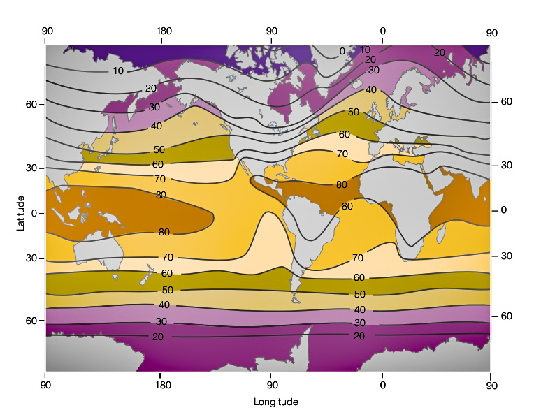
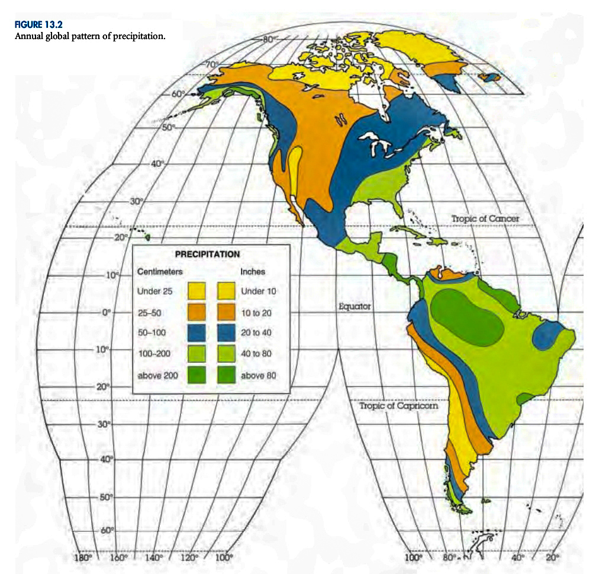
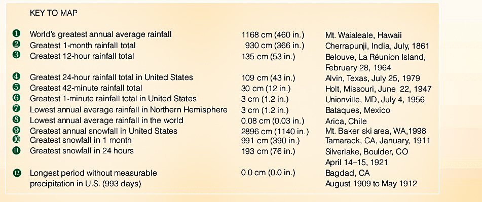

Back


Global climate refers to the long-term patterns and trends of weather conditions, including
temperature, precipitation, wind patterns, and other atmospheric factors, on a global scale.
7 Climatic Controls
Intensity of sunshine and it’s variation to latitude
Distribution of land and water
Ocean Current
Prevailing winds
Position of high and low pressure areas
Mountain barriers
Altitude
Global temperature refers to the average temperature of the Earth’s surface, taking into account
measurements from various locations around the world. It provides an understanding of the overall
heat balance of the planet and is a key indicator of climate change. Changes in global temperature
can impact weather patterns, sea levels, ecosystems, and human activities.

Global precipitation refers to the total amount of rainfall, snowfall, and other forms of precipitation
that occur worldwide. It indicates the distribution and intensity of moisture across the Earth’s
surface. Global precipitation patterns are influenced by factors such as atmospheric circulation,
temperature gradients, and proximity to large bodies of water. Changes in global precipitation can
affect water resources, agriculture, and the overall climate system.

Precipitation extremes refer to the occurrence of unusually high or low amounts of rainfall or
snowfall in a specific region. These extreme weather events can deviate significantly from the normal
or average precipitation patterns observed in that area.
